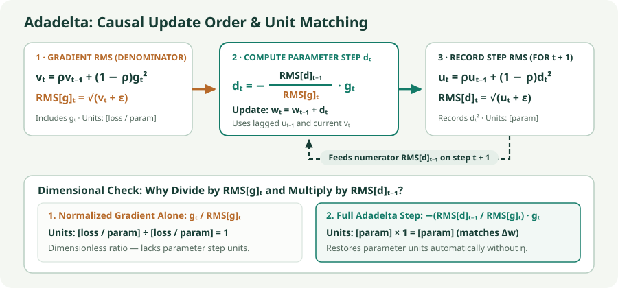

Adadelta: Learning an Update Scale
Track two running averages—squared gradients and squared parameter updates—to adapt each coordinate’s step scale automatically.
Adadelta was designed to fix two flaws in Adagrad ($w_t=w_{t-1}-\frac{\eta}{\sqrt{\sum_{k=1}^t g_k^2+\epsilon}}g_t$): first, summing squared gradients from $t=1$ forever forces the effective learning rate toward zero; second, dividing $g_t$ by its root-mean-square (RMS) leaves a dimensionless ratio that still requires a manual learning rate $\eta$ to restore parameter units.
1. What Adadelta fixes: decaying rates and mismatched units
Instead of summing all past $g_k^2$, Adadelta keeps an exponential moving average $v_t$ of recent squared gradients and a second exponential moving average $u_t$ of recent squared parameter updates ($v_0=0,\,u_0=0$, $0\le\rho<1$):
Every square, square root, and division is element-wise per coordinate. Notice the time indices in $d_t$: the denominator uses $v_t$ (which already includes today’s gradient $g_t$), whereas the numerator uses $u_{t-1}$ because $u_t$ depends on $d_t^2$ and cannot be computed until after $d_t$ is known. Having $\epsilon>0$ inside both square roots prevents division by zero and ensures the initial numerator $\sqrt{u_0+\epsilon}=\sqrt{\epsilon}$ is nonzero when starting from $u_0=0$.

2. Why the ratio $\operatorname{RMS}[d]_{t-1}/\operatorname{RMS}[g]_t$ sets the step scale
If you only normalize the gradient by its RMS, the gradient units $\bigl[\frac{\partial L}{\partial w}\bigr]=\frac{\text{loss}}{\text{param}}$ cancel completely, leaving a dimensionless number rather than a parameter displacement:
In a 1D second-order Newton step $\Delta w=-g_t/(\partial^2 L/\partial w^2)$, the inverse curvature converts gradient units into parameter units:
Adadelta replaces that unknown scale with the ratio of recent RMS step size to recent RMS gradient magnitude, $\operatorname{RMS}[d]_{t-1}/\operatorname{RMS}[g]_t$, giving $d_t$ the exact units of $w$:
Spike damping: if $g_t$ suddenly spikes on step $t$, $v_t$ in the denominator increases immediately while $u_{t-1}$ in the numerator still reflects pre-spike step sizes, automatically damping the spike.
3. Lab: expose both histories
The lab uses the same rotated quadratic dataset as the preceding chapters.
Adadelta’s numerator and denominator
The readout shows the old RMS update used in the numerator, the new RMS gradient in the denominator, and both updated state buffers.
- Compare $\epsilon$: switch between $\epsilon=10^{-3}$ and $\epsilon=10^{-6}$ to see how $\sqrt{u_{t-1}+\epsilon}$ scales the trajectory.
- Change memory $\rho$: compare $\rho=0.5$ and $\rho=0.95$ to see how quickly $v_t$ and $u_t$ adapt.
- Rotate the valley: compare $0^\circ$ and $45^\circ$. Because $v_t$ and $u_t$ are coordinate-wise, diagonal scaling cannot align with a rotated narrow valley.
4. Implementation, external lr, and memory state
Although pure Adadelta sets $w_t=w_{t-1}+d_t$ with no global learning rate, PyTorch’s torch.optim.Adadelta exposes an external multiplier $\eta$ (lr=1.0 by default). Importantly, $u_t$ accumulates the unscaled step $d_t^2$ before $\eta$ is applied:
# Element-wise operations; v and u persist across batches.
v = rho * v + (1 - rho) * grad.square()
d = -(u + eps).sqrt() / (v + eps).sqrt() * grad
u = rho * u + (1 - rho) * d.square()
parameter += lr * d
optimizer = torch.optim.Adadelta(
model.parameters(), lr=1.0, rho=0.9, eps=1e-6,
weight_decay=0
)Optimizer state memory: Adadelta stores two extra numbers per model weight—the squared-gradient average $v_{t,i}$ and the squared-update average $u_{t,i}$. Every parameter tensor W of shape $(d_{\text{out}}, d_{\text{in}})$ requires two matching state tensors v and u of shape $(d_{\text{out}}, d_{\text{in}})$ ($+8\text{ bytes/parameter}$ in FP32, the same state footprint as Adam). Also note that $\epsilon$ sits inside both square roots ($\sqrt{v_t+\epsilon}$), unlike standard PyTorch RMSprop/Adam where $\epsilon$ sits outside ($\sqrt{v_t}+\epsilon$).
5. Questions worth answering
No. Because $d_t=-\frac{\sqrt{u_{t-1}+\epsilon}}{\sqrt{v_t+\epsilon}}g_t$ multiplies $g_t$ directly and stores squared magnitudes rather than signed momentum, $g_t=0$ immediately gives $d_t=0$.
Because $v_t$ averages $g_t^2=4$ at every step, discarding the sign. The step direction comes purely from the current gradient’s sign $-g_t$.
Both divide $g_t$ by $\sqrt{v_t+\epsilon}$, but RMSprop multiplies by a fixed scalar learning rate $\eta$, whereas Adadelta multiplies by the coordinate’s own running RMS update $\sqrt{u_{t-1}+\epsilon}$.
Sources
Zeiler, ADADELTA: An Adaptive Learning Rate Method; PyTorch Adadelta.